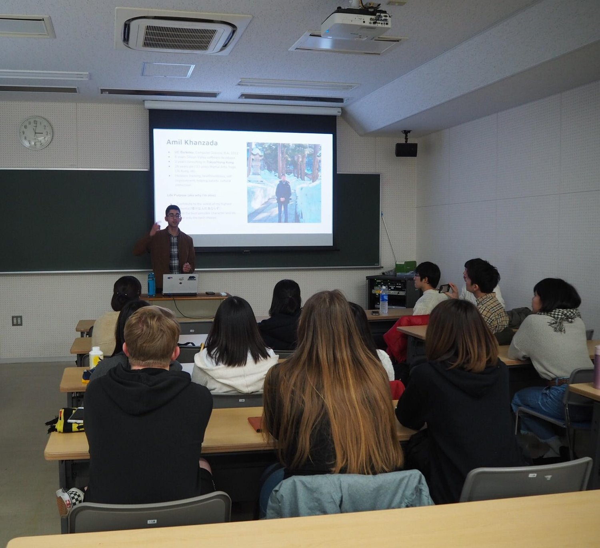
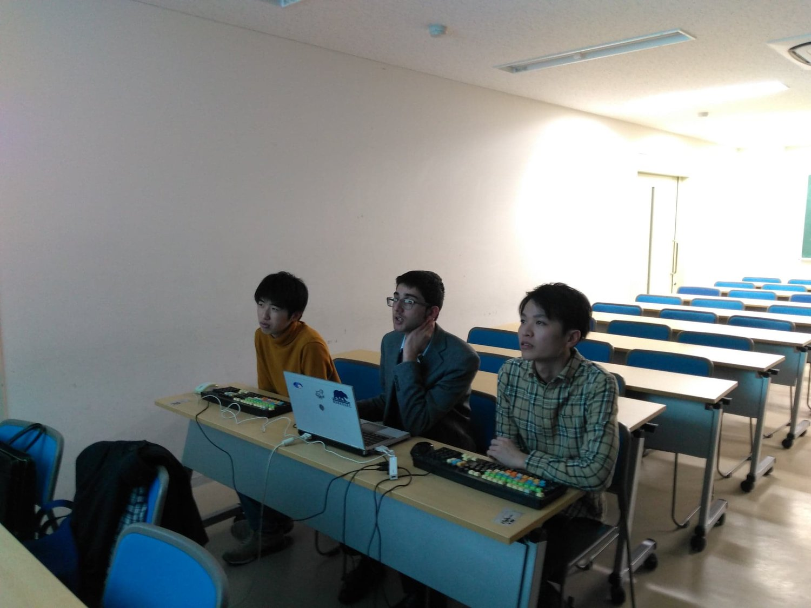
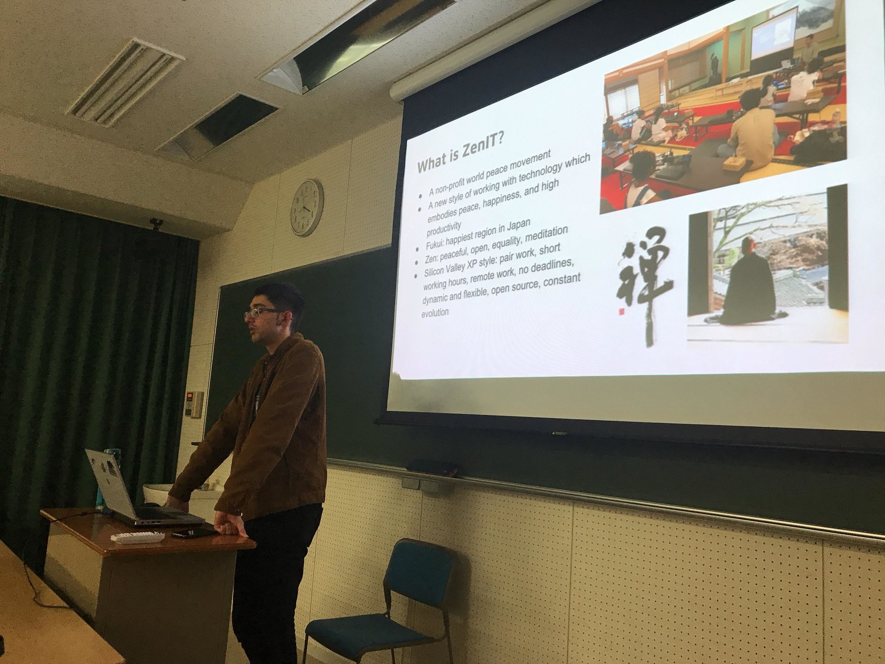

ZENIT ARCHIVE
University of Fukui Students Learn About the Silicon Valley and ZenIT
Jan 26, 2019
ZenIT founder, Amil, gave a presentation in Japanese to about 20 students of the University of Fukui School of Global and Community Studies! Thanks to the students for helping to prepare the slides with pair work in ZenIT style!
禅ITの創立者のカンザダあみる氏は福井大学の20人ほどの学生さんたちに発表しました。禅ITのやり方のペアワークで発表のスライドも一緒に作った学生さんたちに大変お世話になっています！
Pair (trio) work
ペアワーク
Amil spoke on many things including Silicon Valley, Fukui, ZenIT, world peace, Zen, and foreign countries over almost 90 minutes. The University of Fukui, especially the School of Global and Community Studies, will be crucial as Fukui is ZenIT’s birthplace.
あみる氏はシリコンバレーや福井県や禅ITや世界平和や禅や海外含めて、90分間ほどいろいろな話をしました。禅ITの生まれた福井県の福井大学はこれからものすごく大事です！
Recent Posts
See All
2019/12/15 ZenIT Workshop @ Tenryuuji - Blog Post
2019/04/14 ZenIT Workshop @ Eiheiji - Blog Post
Successful ZenIT Planning Workshop!


